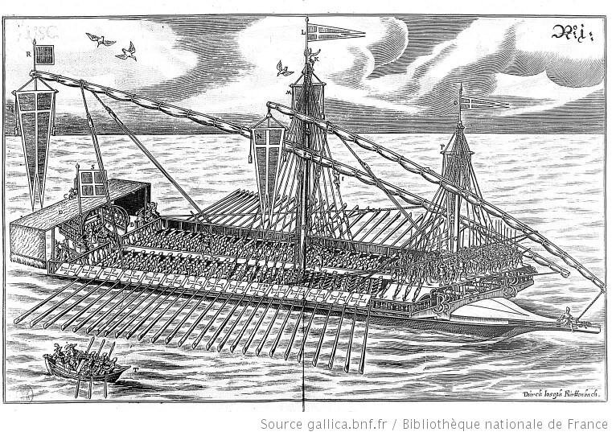

Вернемся к процессу доставки осужденных на галеры к месту их постоянной «работы». Ранее мы уже рассмотрели организацию этапов с каторожниками по территории Франции. Выше были указаны и основные источники. Сейчас обратимся к заключительному этапу этого тяжкого перехода.
«Осужденных на галеры, прибывающих в Марсель, встречал отряд специальныx сил безопасности. Он сопровождал каторжников вместе с их повозками и конвоем по улицам города. Перемещение на этом последнем участке этапа было самым тяжелым и медленным. Оглушительные крики охранников и кандальный звон сливались в единый громкий звук, перекрывая обычный шум, царивший на узких улицах города. Любопытные толпились у окон и дверей окружающих зданий, наблюдая, как приближалась и затем удалялась цепь каторжников. Охрана оттесняла прохожих и зевак, чтобы освободить дорогу и хоть как-то ускорить движение процессии закованных в цепи людей, которая, извиваясь, едва тащилась по направлению к старому порту. Наконец, этап достигал конечного пункта, который обычно находился у городского собрания или перед резиденцией интенданта галер.»
Это цитата из книги У.Бэмфорда (с.201). Одно из немногих «живых» описаний в этой, в общем-то сухой, хотя и очень интересной, книге.
Обычно новичков «принимали» незамедлительно и приписывали к старым галерам (как правило типа réale), служащим в качестве приемно-распределительных пунктов. Здесь каторжники проводили от нескольких дней до пары недель. Срок пребывания зависел от потребности в гребцах, которая диктовалась текущей обстановкой в Галерном корпусе. Практически сразу же осужденных делили на пять или шесть категорий, в зависимости от их физического состояния и перспектив использования. Комиты-ветераны и доктор занимились определением качества и состояния каторжников. Они принимали определяющее решение, в какой из катергорий каторжник мог работать на веслах. К первой категории относили «отборных», другие были ступенью ниже в оценке их силы и способностей к работе на веслах. Самая низшая категория включала больных и непригодных для гребли.
Затем вновь прибывших распределяли по галерам, таким образом, чтобы каждая галера получала соответствующую долю в пропорции от ее потребностей. Это была деликатная и очень важная задача, так как считалось, что гребцы на каждой галере должны хорошо подходить по коллективной силе к гребцам других галер отряда; в противном случае, если силы не будут примерно равными, галеры с лучшими гребцами будут вынуждать гребцов более слабой галеры предпринимать чрезмерные усилия для удержания ритма. Истощение, если оно будет продолжаться долго, породит причины, которые осложнят проблемы более слабых галер и увеличат неравенство между различными кораблями. Среди офицеров галер существовало острое соперничество; каждый хотел получить максимально возможное количество гребцов «отборной» категории для своей галеры. Репутация капитана напрямую зависела от этого, так как скорость и маневренность его галеры естественно отражали качества людей, которые сидели на веслах.
Для того, чтобы обеспечить разумное равномерное распределение новых гребцов, когда потребность в них было особенно остра, использовались различные методы. Один из них (правда, имевший место в Дюнкерке, а не в Марселе) был подробно описан Жаном Мартейлем, осужденным, который дожил до публикации своих мемуаров. (Jean Marteilhe, Memoires d'un protestant condamné aux galeres de France pour cause de religion), описывающих некоторые моменты из его жизненного опыта:
«Нас привели в Parc de l’Arsenal, и заставили раздеться донага, так, чтобы все части нашего тела могли быть осмотрены. Мы чувствовали себя подобно жирному скоту на рынке. Осмотр закончился, мы [шестьдесят человек] были разбиты на категории, от самых сильных до самых слабых, и затем мы были разбиты на шесть равных, насколько это возможно, групп, и каждый комит тянул жребий, чтобы выбрать себе группу.» (Marteilhe, Memoires, 76)
Мартейль пишет, что перед тем, как был разыгран жребий , он слышал, что комит на борту галеры La Palme был особенно жесток и что тем, кто попадет в его группу, не позавидуешь. После того, как жеребьевка закончилась, Мартейль, не зная своей судьбы, повернулся к мужчине, стоящему неподалеку, спросив его, на какую галеру попала его группа. «На La Palme» ответил мужчина. Мартейль проклял свое дьявольское невезение. «Почему вам повезло меньше, чем другим?» спросил его этот мужчина. «Потому, - сказал Мартейль, - что я попал на самую страшную галеру, комит которой сущий дьявол или хуже того». Мартейль не знал, что он разговаривал с тем самым комитом. Но события обернулись таким образом, что судьба была благосклонна к Мартейлю; его новый комит, согласно упомянутым мемуарам, своим поведением всячески показывал, что его репутация как дьявола была несправедлива. Не отвергая полностью утверждения Мартейля, представляется очевидным, что на поведение комита в данном вопросе оказывало влияние наличие у Мартейля могущественных друзей и доступа к значительным денежным средствам. В любом случае, Мартейль пользовался относительно благоприятным обхождением со стороны этого человека.
Вскоре после прибытия новым осужденным и рабам выдавали обмундирование (вещевое снабжение). Но об этом в следующий раз.